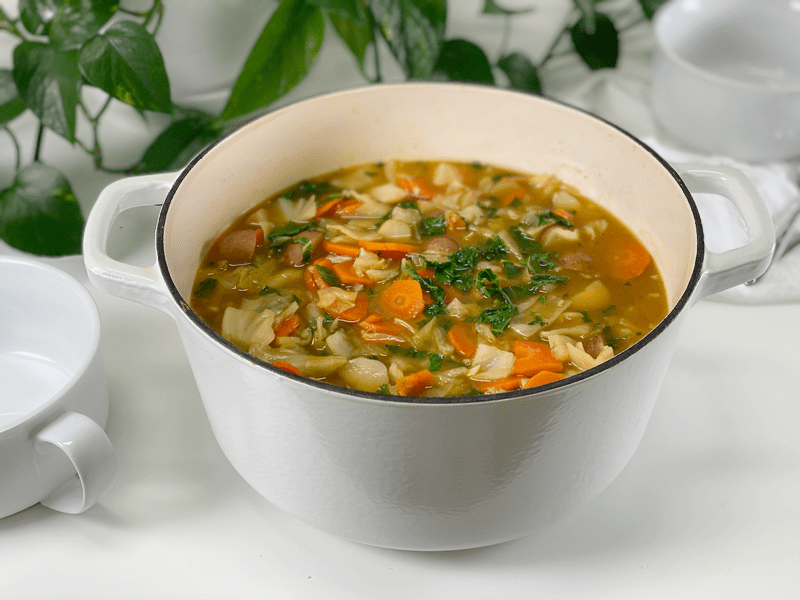

End of the Week Soup Challenge #2 | Leftovers | Oil-Free
Here we are again… my weekly End of the Week Soup Challenge! For these posts, I don’t provide you with a recipe. Instead, it’s my way of inspiring you in how to use “boring” leftovers that accumulate throughout the week. Ensuring that your leftovers are still fresh enough to re-use, you can make incredible pots of soup that give individual foods a new life. This technique saves money, time, and stretches out your weekly menu by a few extra days.

This week’s soup is simple, yet it turned out so delicious. I had a medium-sized cabbage head that was desperately looking for a job, so I chopped it up into bite-sized pieces and added it to a large pot. I poured my leftover vegetable broth over the cabbage, giving it something to cook in. While it was simmering, I added a tablespoon of vegetable boullion, a little extra salt, and black pepper.
While the cabbage was breaking down and softening, I dug deeper into the fridge and pulled out a bag of carrots that looked like hairy legs—hey, just being honest. They had tiny white root hairs growing along with the carrot. Oops, how did they get ignored for so long? I washed and peeled (shaved) them. I took a bite, and they tasted perfect. I ran them through my food processor, fitted with the slicing blade. Since I knew that the soup was going to cook reasonably quickly, I made sure to slice them a bit thinner to reduce their cooking time. From there, I tossed them into the pot so they could cook down with the cabbage.
Then…the song Flashdance filled the room (I always have music on when cooking), and that’s when I had to break out my dance moves and shake a little energy off. When the song ended, I turned around to see Milo (the wonder dog) sitting in the doorway, looking at me. His head was rocking back and forth. At first, one might interpret his reaction as questioning, but I took it to mean that he was thoroughly impressed and wanted me to keep going. Sorry, pup…I need to get back to my soup.
Back to the fridge, in search of more leftovers, I pulled out a container of cooked small potatoes. Perfect–those always complement darn near any soup. So I cut up them in quarters (bite-sized) and set them off to the side. Since they were already cooked, I didn’t add them until the carrots and cabbage had softened. Otherwise, they could get mushy.
After one last pass through the fridge, I spied some kale that was starting to wilt just a smidgen. I de-stemmed three leaves, rolled them up, and chopped them into small pieces. These, too, were set aside to add when the soup was nearly done cooking.
Once the carrots where tender, I knew that the soup was nearing the end of the cooking time. I added the diced potatoes and kale. I let it cook until the potatoes were heated through and the kale had wilted. As simple as all those ingredients may seem, the soup turned out fantastic. It was full of texture and flavor.
Leftover Recap and Quick Tips
Again, this isn’t a “recipe.” I made this soup strictly from the leftovers that I had from the previous week.
- Cabbage: Chop into manageable bite-sized pieces. No one wants their chin slapped with hot cabbage leaves as they try to dish spoonfuls into their mouths.
- Carrots: Slice or dice into small pieces, so they cook faster. Remove the skins to reduce bitterness.
- Cooked leftover potatoes: Dice into bite-sized pieces. Add toward the end of the cooking time to retain their “meaty” texture.
- Kale:- Just like the cabbage, chop into small pieces. Don’t overcook it, or it will take on an unpleasant slimy texture.
- Cooking liquid: As mentioned above, I used some leftover vegetable broth. I ALWAYS have a container of this in the fridge, since I like to cook my grains in it rather than using water. If you don’t have any, water always works, but you will need to up your seasoning game for the soup to have more depth.
- Seasoning: Add your favorite spices and herbs. Fresh herbs should be added toward the end of the cooking time, since they are more delicate than dried.
I hope you enjoyed this little “snippet of life” posting and that it gave you some ideas on how to approach the leftovers in your fridge. Sending you love and blessings, amie sue
© AmieSue.com